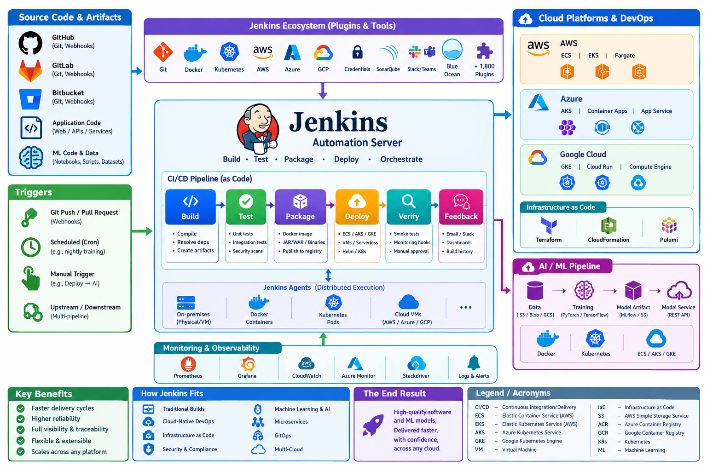

Orchestrating CI/CD with Jenkins¶
Learning Objectives¶
Learning Objectives
- Define Jenkins and its role as a universal automation orchestrator.
- Understand the Jenkins Master-Agent architecture for scalable execution.
- Implement "Pipeline as Code" using the
Jenkinsfile. - Integrate Jenkins with cloud providers (AWS, Azure, GCP) and AI/ML workflows.
- Distinguish between Declarative and Scripted pipelines.
- Design a production-grade pipeline that spans from source control to AI model deployment.
Overview¶
Jenkins is the most widely used open-source automation server in the world. Unlike specialized tools that do one thing well, Jenkins is designed as an extensible engine. Through a massive ecosystem of over 1,800 plugins, Jenkins can be adapted to almost any workflow, from legacy on-premise monoliths to modern, cloud-native microservices.
Why this matters
While newer "cloud-native" CI tools exist, Jenkins remains a cornerstone because of its flexibility. It allows organizations to build highly complex, customized orchestration logic that spans multiple clouds, security scanners, and deployment targets, all controlled from a single central point.


Figure 1: Jenkins Cloud AI Workflow.
Fundamentals of Jenkins¶
Core Purpose and Capabilities¶
Jenkins focuses on automating the repetitive parts of software delivery. Its extensibility allows it to handle a vast array of automation scenarios:
| Core purpose | How Jenkins achieves it |
|---|---|
| Automate builds | Detects changes in source-code repositories (Git, Subversion, etc.) and runs build tools (Maven, Gradle, npm, Make, etc.) automatically. |
| Run tests continuously | Executes unit, integration, UI, performance, and security tests after each build, reporting results immediately. |
| Package artifacts | Creates Docker images, JAR/WAR files, binaries, or any other deployable artifact and stores them in registries or artifact repositories. |
| Deploy to environments | Pushes artifacts to cloud or on-prem resources (Kubernetes, AWS ECS, Azure AKS, GCP GKE, VMs, serverless platforms) using scripts, plugins, or declarative pipelines. |
| Provide feedback | Sends notifications via email, Slack, Microsoft Teams, etc., and visualises build history, test trends, and deployment status on a web UI. |
| Orchestrate complex workflows | Chains multiple stages (build → test → security scan → containerise → deploy) using Pipeline as Code (Declarative or Scripted Groovy). |
| Extend functionality | Over 1,800 plugins add support for source control, cloud providers, container runtimes, credential management, static analysis, automated approvals, and more. |
| Scale execution | Runs jobs on a master node and distributes work to any number of agents (also called slaves) that can be bare-metal, virtual machines, Docker containers, or Kubernetes pods. |
| Enforce standards | Integrates with code-quality tools (SonarQube, Checkstyle), security scanners (OWASP Dependency-Check), and compliance checks to prevent low-quality code from reaching production. |
The Master-Agent Architecture¶
To avoid performance bottlenecks and ensure environment isolation, Jenkins uses a distributed architecture:
Figure 2: Jenkins Master-Agent Architecture.
-
Jenkins Master: The "brain" of the operation. It handles the UI, manages plugin configurations, schedules jobs, and monitors the agents.
-
Jenkins Agents: The "workers." These are separate machines or containers that actually execute the build steps. This allows you to run a Linux build on a Linux agent and a Windows build on a Windows agent, all orchestrated by one master.
Typical Jenkins Workflow (CI/CD Pipeline)¶
A typical Jenkins pipeline follows a rigorous path from code commit to production:
-
Source change - A developer pushes a commit to the repository.
-
Trigger - Jenkins receives a webhook or polls the repo and starts a job/pipeline.
-
Build - Compiles the code, resolves dependencies, and creates artifacts.
-
Test - Executes automated tests; results are recorded and reported.
-
Artifact storage - Successful artifacts are pushed to a Docker registry, Nexus, Artifactory, etc.
-
Deployment - The pipeline deploys the artifact to a staging environment; optional approvals promote it to production.
-
Verification - Post-deployment smoke tests, monitoring hooks, or manual QA checks.
-
Feedback - Notifications are sent, dashboards updated, and the cycle repeats for the next change.
Key Benefits¶
-
Speed: Immediate feedback reduces integration problems and shortens release cycles.
-
Reliability: Automated, repeatable steps minimise human error.
-
Visibility: Central UI and APIs give complete traceability of every change.
-
Flexibility: Plugins and pipeline code allow you to tailor workflows to any tech stack.
-
Scalability: Distributed agents let you run many jobs in parallel, on any platform (bare metal, VM, Docker, Kubernetes).
Where Jenkins Fits in Modern Toolchains¶
| Scenario | Jenkins role |
|---|---|
| Traditional on-prem builds | Serves as the central build orchestrator for legacy applications. |
| Cloud-native DevOps | Runs pipelines that interact with AWS, Azure, or GCP services, often via Kubernetes agents. |
| Infrastructure-as-Code (IaC) | Executes Terraform, CloudFormation, or Pulumi scripts to provision or update environments. |
| Security & compliance | Triggers static code analysis, dependency vulnerability scans, and policy-as-code checks. |
| Machine-learning & AI | Automates data preprocessing, model training, artifact archiving, and deployment of inference services. |
| Micro-service orchestration | Builds Docker images, updates Helm charts, and deploys to service meshes (Istio, Linkerd). |
| GitOps | Generates new container image tags; a GitOps tool (ArgoCD, Flux) detects the change and syncs the cluster. |
Getting Started and Technical Setup¶
Quick Start Guide¶
-
Install Jenkins (Docker, native package, or cloud-hosted).
-
Create a pipeline using the built-in Blue Ocean UI or write a
Jenkinsfile. -
Add required plugins (Git, Docker, Kubernetes, credentials, etc.).
-
Configure credentials (SSH keys, cloud service accounts) securely in the Jenkins credentials store.
-
Connect a source repository (GitHub, GitLab, Bitbucket) and enable webhooks.
-
Run the pipeline and iterate - add test stages, security scans, and deployment steps as needed.
Installation & Security Guide¶
Depending on your environment, you can deploy Jenkins using a containerized approach for rapid development or a native installation for dedicated servers.
Option 1: Containerized Setup (Docker Compose)¶
For a rapid local laboratory setup, use Docker Compose. This configuration mounts the host's Docker socket, allowing Jenkins to build and push Docker images directly from the container. For more detailed setup and exercises, see the Local Lab.
version: '3.8'
services:
jenkins:
image: jenkins/jenkins:lts
container_name: jenkins-local
privileged: true
user: root
ports:
- "8080:8080"
- "50000:50000"
volumes:
- jenkins_home:/var/jenkins_home
- /var/run/docker.sock:/var/run/docker.sock
restart: unless-stopped
volumes:
jenkins_home:
To start the lab:
Option 2: Native Installation (Ubuntu)¶
To set up a production-ready Jenkins instance on Ubuntu, follow these steps:
-
Install Java Jenkins requires Java 11 or later.
-
Install Jenkins Add the official repository and install the server.
-
Start the Service Enable Jenkins to start on boot and start it immediately.
Jenkins will now be available on port 8080. -
Unlock Jenkins Open
http://<your-host>:8080in your browser. You will be asked for an initial admin password, which can be found at:/var/lib/jenkins/secrets/initialAdminPassword -
Install Essential Plugins During the setup wizard, install the suggested plugins and add these for cloud and AI capabilities:
- Docker Pipeline (Plugin Documentation)
- Kubernetes CI
- Git & GitHub Branch Source
- Pipeline: Multibranch
- Blue Ocean
- Credentials Binding
- AWS / Azure / Google OAuth Credentials
-
Artifact Manager on S3
-
Secure the Connection Use a reverse proxy like NGINX or Caddy with a TLS certificate from Let's Encrypt to ensure encrypted traffic.
Hardening Jenkins Security¶
Avoid the Default Administrator Account
The default "Administrator" account is a high-value target for attackers. Once you have completed the initial setup, create individual user accounts with specific permissions and disable or strictly limit the use of the primary admin account.
Implement Role-Based Access Control (RBAC)
For production environments, avoid assigning "Overall/Admin" permissions to multiple users. Install the Role-based Strategy plugin. This allows you to define roles (e.g., Developer, QA, Ops) and map them to specific project folders or global permissions, ensuring the principle of least privilege.
Additional Security Checklist: - Prefer OIDC over Static Keys: When deploying to AWS, Azure, or GCP, use OpenID Connect (OIDC) or IAM Roles (e.g., AWS IRSA) instead of static access keys to provide short-lived, dynamically generated credentials. - Disable SSH for agents where possible; use the JNLP (Java Network Launch Protocol) for more secure agent communication. - Audit Plugins regularly: Remove unused plugins to reduce the attack surface. - Enable Audit Logging: Use plugins that track who changed what configuration in the Jenkins Master.
Tip: If you prefer a fully-managed Jenkins, spin up Jenkins X on a cloud Kubernetes cluster - the same pipeline concepts apply.
Building a Classic CI/CD Pipeline (Dockerised Web App)¶
Repository Layout¶
my-app/
│
├─ src/ # Application source (e.g., Flask, Node, Java)
│ └─ main.py
├─ requirements.txt # Python deps (or package.json, pom.xml, …)
├─ Dockerfile # Build image
└─ Jenkinsfile # Declarative pipeline definition
Minimal Dockerfile¶
# Use official Python slim image
FROM python:3.11-slim
WORKDIR /app
COPY requirements.txt .
RUN pip install --no-cache-dir -r requirements.txt
COPY src/ ./src
# Expose the web port (change as needed)
EXPOSE 5000
CMD ["python", "src/main.py"]
Complete Declarative Jenkinsfile¶
pipeline {
agent any // Runs on any available Jenkins agent
environment {
REGISTRY = "YOUR_ACCOUNT.dkr.ecr.us-east-1.amazonaws.com"
IMAGE = "\${REGISTRY}/my-app:\${env.BUILD_NUMBER}"
AWS_CRED = credentials('aws-cred-id')
}
stages {
stage('Checkout') {
steps {
git url: 'https://github.com/your-org/my-app.git', branch: 'main'
}
}
stage('Lint & Test') {
parallel {
stage('Lint') {
steps {
sh 'python -m pip install -r requirements.txt'
sh 'flake8 src/'
}
}
stage('Unit Tests') {
steps {
sh 'python -m pip install -r requirements.txt'
sh 'python -m unittest discover -s src/tests'
}
}
}
}
stage('Build Docker Image') {
steps {
script {
docker.build("\${IMAGE}")
}
}
}
stage('Push to Registry') {
steps {
withCredentials([[$class: 'AmazonWebServicesCredentialsBinding',
credentialsId: "\${AWS_CRED}",
accessKeyVariable: 'AWS_ACCESS_KEY_ID',
secretKeyVariable: 'AWS_SECRET_ACCESS_KEY']]) {
sh """
aws ecr get-login-password --region us-east-1 |
docker login --username AWS --password-stdin ${REGISTRY}
docker push ${IMAGE}
"""
}
}
}
stage('Deploy to Cloud') {
steps {
echo "Deploy step placeholder - see Section 4 for cloud-specific scripts."
}
}
}
post {
always {
cleanWs() // Clean workspace after each run
}
success {
mail to: 'dev-team@example.com',
subject: "Build #\${env.BUILD_NUMBER} succeeded",
body: "Image ${IMAGE} is now in the registry."
}
failure {
mail to: 'dev-team@example.com',
subject: "Build #\${env.BUILD_NUMBER} failed",
body: "Check Jenkins console for details."
}
}
}
Deploying to a Cloud Container Service¶
Below are three drop-in snippets you can paste into the "Deploy to Cloud" stage of the Jenkinsfile. Choose the one that matches your cloud provider.
AWS ECS (Fargate)¶
stage('Deploy to ECS') {
steps {
withCredentials([[$class: 'AmazonWebServicesCredentialsBinding',
credentialsId: "\${AWS_CRED}",
accessKeyVariable: 'AWS_ACCESS_KEY_ID',
secretKeyVariable: 'AWS_SECRET_ACCESS_KEY']]) {
sh '''
# Update the task definition JSON (keep a template in repo)
export TASK_DEF=$(cat ecs-task-template.json | \\
jq ".containerDefinitions[0].image = \\\"${IMAGE}\\\"")
aws ecs register-task-definition \\
--family my-app-task \\
--cli-input-json "$TASK_DEF"
# Force a new deployment on the service
aws ecs update-service \\
--cluster my-ecs-cluster \\
--service my-app-service \\
--force-new-deployment
'''
}
}
}
Azure AKS (Kubernetes)¶
stage('Deploy to AKS') {
steps {
withCredentials([azureServicePrincipal(credentialsId: 'azure-sp-id',
subscriptionIdVariable: 'AZ_SUB',
clientIdVariable: 'AZ_CLIENT',
clientSecretVariable: 'AZ_SECRET',
tenantIdVariable: 'AZ_TENANT')]) {
sh '''
az login --service-principal -u $AZ_CLIENT -p $AZ_SECRET --tenant $AZ_TENANT
az aks get-credentials --resource-group my-rg --name my-aks-cluster
# Apply a simple deployment manifest (in repo: k8s/deploy.yaml)
kubectl set image deployment/my-app my-app=${IMAGE} --record
kubectl rollout status deployment/my-app
'''
}
}
}
GCP GKE¶
stage('Deploy to GKE') {
steps {
withCredentials([file(credentialsId: 'gcp-key-file', variable: 'GCP_KEY')]) {
sh '''
gcloud auth activate-service-account --key-file=$GCP_KEY
gcloud config set project my-gcp-project
gcloud container clusters get-credentials my-gke-cluster --region us-central1
kubectl set image deployment/my-app my-app=${IMAGE} --record
kubectl rollout status deployment/my-app
'''
}
}
}
Tip: Keep the cloud-specific snippets in separate Groovy shared libraries (e.g., vars/awsDeploy.groovy). This makes the Jenkinsfile cleaner and easier to maintain across multiple projects.
Extending for AI/ML¶
Assume you have a Python model that you want to (re)train on every successful build and then ship as a REST micro-service.
Figure 3: AI/ML Lifecycle (Data \(\rightarrow\) Train \(\rightarrow\) Validate \(\rightarrow\) Registry \(\rightarrow\) Deploy).
The MLOps Ecosystem
While Jenkins orchestrates the process (triggering training, running tests), it is often paired with specialized MLOps tools for the lifecycle:
- Experiment Tracking: Tools like MLflow or Weights & Biases track hyperparameters and metrics for every run.
- Model Registries: Kubeflow or Hugging Face Hub manage model versioning and staging (e.g., Staging \(\rightarrow\) Production).
- Feature Stores: Feast or Tecton ensure consistent data features between training and inference.
Jenkins acts as the "glue" that triggers these tools and manages the deployment of the final model.
Project structure addition¶
my-app/
│
├─ ml/
│ ├─ train.py # Simple training script
│ ├─ serve.py # Model REST API
│ └─ requirements-ml.txt
└─ Dockerfile.ml # Dockerfile for the model service
ml/train.py (Example)¶
import numpy as np
from sklearn.linear_model import LogisticRegression
import joblib
import os
# Dummy data
X = np.random.randn(200, 5)
y = (X[:, 0] + X[:, 1] > 0).astype(int)
model = LogisticRegression()
model.fit(X, y)
out_path = os.getenv("MODEL_PATH", "ml/model.pkl")
joblib.dump(model, out_path)
print(f"Model saved to {out_path}")
Dockerfile.ml¶
FROM python:3.11-slim
WORKDIR /app
COPY ml/requirements-ml.txt .
RUN pip install --no-cache-dir -r requirements-ml.txt
COPY ml/ ./ml
ENV MODEL_PATH=/app/ml/model.pkl
EXPOSE 8081
CMD ["python", "-m", "ml.serve"]
Extending the Jenkinsfile¶
Add the following stage after the Docker image push to automate the ML lifecycle:
stage('Train & Publish ML Model') {
environment {
MODEL_REGISTRY = "s3://my-ml-artifacts/\${env.BUILD_NUMBER}/"
AWS_CRED = credentials('aws-cred-id')
}
steps {
// 1. Run training inside a container (ensures reproducibility)
script {
docker.image('python:3.11-slim').inside("-v \${env.WORKSPACE}:/ws") {
sh '''
pip install -r /ws/ml/requirements-ml.txt
python /ws/ml/train.py
'''
// 2. Archive the model artifact
archiveArtifacts artifacts: 'ml/model.pkl', fingerprint: true
// 3. Upload to S3 for versioned storage
withCredentials([[$class: 'AmazonWebServicesCredentialsBinding',
credentialsId: "\${AWS_CRED}",
accessKeyVariable: 'AWS_ACCESS_KEY_ID',
secretKeyVariable: 'AWS_SECRET_ACCESS_KEY']]) {
sh """
aws s3 cp ml/model.pkl ${MODEL_REGISTRY}model.pkl
"""
}
}
}
}
}
Deploy the model as a micro-service¶
Reuse the cloud-deployment logic from the "Deploying to a Cloud Container Service" section, but point to Dockerfile.ml and the model-specific image (e.g., my-ml-service:\${BUILD_NUMBER}). The steps are identical - just change the image name and the Kubernetes/ECS task definition.
Automation and Triggers¶
| Trigger type | Jenkins configuration | Typical use-case |
|---|---|---|
| Push trigger | In Multibranch Pipeline settings → "GitHub hook trigger for GITScm polling" | Every commit runs the CI pipeline automatically |
| Scheduled trigger | cron('H H * * *') in the pipeline { ... } block |
Nightly model retraining (e.g., heavy dataset) |
| Manual parameterised trigger | parameters { booleanParam(name: 'DEPLOY_MODEL', defaultValue: true) } |
Let a data-science lead decide when to push a new model |
| Upstream/downstream | build job: 'model-training', propagate: true, wait: true |
Separate pipelines for app vs model but chained together |
Example snippet with a boolean flag for conditional deployment:
pipeline {
agent any
parameters {
booleanParam(name: 'DEPLOY_ML', defaultValue: true, description: 'Deploy the newly trained model?')
}
stages {
// ... other stages ...
stage('Conditional Model Deploy') {
when {
expression { return params.DEPLOY_ML }
}
steps {
echo "Deploying ML model service..."
}
}
}
}
Architecture Overview¶
The complete Jenkins-driven workflow spans from source control → CI → container registry → cloud → AI model training & serving.
Diagram legend
| Symbol | Meaning |
|---|---|
| GitHub | Source repository (code + ML scripts) |
| Jenkins Master | Orchestrates jobs, holds credentials |
| Jenkins Agents | Build runners (Docker, K8s, or cloud VMs). For AI/ML workloads, these are often specialized GPU nodes (e.g., NVIDIA A100/H100) configured with the NVIDIA Container Toolkit to enable hardware acceleration for training. |
| Docker Registry | ECR / ACR / GCR - stores app & model images |
| Cloud Runtime | ECS, AKS, or GKE - runs the web app |
| Model Service | Separate container (Python/Flask) serving predictions |
| S3 / Blob / GCS | Persistent artifact store for versioned models |
| Monitoring | Prometheus/Grafana, CloudWatch, Azure Monitor, etc. |
Jenkins vs. Cloud-Native CI¶
While Jenkins is a powerful orchestrator, it represents a different philosophy than "cloud-native" CI tools like GitHub Actions, GitLab CI, or CircleCI.
| Feature | Jenkins | Cloud-Native CI (SaaS) |
|---|---|---|
| Hosting | Self-hosted (You manage the server, OS, and Java) | Managed (SaaS provider handles infrastructure) |
| Configuration | Jenkinsfile (Groovy DSL) + UI-based plugins |
YAML-based configuration |
| Scaling | Manual/Plugin-based Agent scaling | Automatic, ephemeral runners |
| Extensibility | Massive plugin ecosystem (1,800+ plugins) | Standardized "Actions" or "Orbs" |
| Cost Model | Infrastructure costs + High operational overhead | Usage-based pricing (minutes/concurrency) |
| Best For | Complex, highly customized, or air-gapped workflows | Rapid iteration, standardized pipelines, and low ops |
Which one to choose? - Choose Jenkins if you need absolute control over the build environment, have strict on-premise security requirements, or have a workflow so complex that it requires custom Groovy logic. - Choose Cloud-Native CI if you want to minimize "tooling toil," prefer a standardized YAML approach, and want your pipelines to scale automatically without managing a master node.
What's Next?¶
While Jenkins offers unmatched flexibility for complex, self-hosted orchestration, modern teams often shift toward managed, container-first platforms to reduce operational overhead and "plugin fatigue."
Explore CircleCI to see how a cloud-native, managed CI/CD service simplifies the pipeline, removes the need for master-agent management, and provides a more streamlined experience for rapid scaling.
Visit the Local Lab for instructions on how to run Jenkins locally.
Summary Checklist¶
- [ ] Jenkins installed and accessible on port 8080.
- [ ] Necessary plugins installed (Git, Docker, Cloud Credentials).
- [ ] Jenkins Master-Agent architecture configured for scalability.
- [ ]
Jenkinsfilecreated and stored in the source repository. - [ ] Pipeline stages defined for Build, Test, and Push to Registry.
- [ ] Cloud-specific deployment logic integrated (AWS, Azure, or GCP).
- [ ] AI/ML training and model archiving stages implemented.
- [ ] Webhooks configured for automatic trigger on push.
Assignments¶
Assignment.1: Basic Pipeline
Create a simple Jenkinsfile (Declarative syntax) for a project of your choice. The pipeline should have three stages: Build, Test, and Deploy. Ensure that the Deploy stage only runs if the Test stage passes.
Solution: Basic Pipeline
Define a pipeline block with agent any. Create three stage blocks. In the Deploy stage, use the when directive or simply rely on the default behavior where a failure in Test stops the pipeline before it reaches Deploy.
Assignment.2: Agent Configuration
Configure a Kubernetes pod as a Jenkins agent using the Kubernetes plugin. Create a pod template in the Jenkins cloud configuration that specifies a Docker image and resource requests (CPU/RAM). Launch a pipeline job that explicitly requests this label and verify that the build executes within an ephemeral pod.
Solution: Agent Configuration
In Manage Jenkins \(\rightarrow\) Nodes and Clouds \(\rightarrow\) Clouds, add a Kubernetes cloud. Define a Pod Template with a label (e.g., k8s-agent) and a container image (e.g., jenkins/inbound-agent). In the Jenkinsfile, use agent { label 'k8s-agent' }. This provides ephemeral environments that are deleted after the job finishes, ensuring a clean state and efficient resource utilization.
Assignment.3: AI/ML Integration
Design a Jenkins pipeline that incorporates a "Model Validation" step. After the training stage, the pipeline should run a script that calculates the model's accuracy and checks for data drift (comparing the current training distribution to the production baseline) and prediction bias. If the accuracy is below 80% or significant drift is detected, the pipeline should fail and send a notification to the team.
Solution: AI/ML Integration
Add a stage Model Validation after Train. Use a shell script to run the validation code. The script should output a JSON report of accuracy, drift metrics (e.g., using the Kolmogorov-Smirnov test), and bias scores. Use a conditional error "Model validation failed: accuracy too low or drift detected!" if the metrics fall outside acceptable thresholds.
Assignment.4: Secret Management
Implement secret retrieval using the HashiCorp Vault plugin. Configure a Jenkins pipeline to fetch a sensitive API key from a Vault path (e.g., secret/data/my-app) using the withVault wrapper. Verify that the secret is used during the build but is correctly masked in the Jenkins console output.
Solution: Secret Management
Install the HashiCorp Vault plugin and configure the Vault URL and token in the system settings. In the Jenkinsfile, use the withVault step:
Assignment.5: Local Setup
In Jenkins, create a new "Pipeline" job. Select "Pipeline script from SCM," choose Git, and point it to your repository. Click "Build Now" to execute the stages and launch the server locally.
References¶
- Jenkins Official Documentation
- Jenkins Pipeline Syntax Guide
- Docker Hub
- Cloud Provider Documentation (AWS/Azure/GCP)
Self-Evaluation¶
What is the difference between the Jenkins Master and its Agents?
The Jenkins Master is the "brain" of the operation; it manages the web UI, stores configurations, schedules jobs, and coordinates the workflow. Jenkins Agents (or slaves) are the "workers" that actually execute the build and test steps on specific environments (e.g., a Linux agent for Bash scripts, a Windows agent for .NET builds), allowing for parallel execution and environment isolation.
Can you describe the typical 8 stages of a CI/CD pipeline?
A comprehensive CI/CD pipeline typically includes: 1) Source Control (triggering on commit), 2) Build/Compile (creating binaries/artifacts), 3) Unit Testing (verifying small code blocks), 4) Static Analysis (checking code quality/security), 5) Integration Testing (verifying module interaction), 6) Packaging (containerizing the app), 7) Staging Deployment (deploying to a pre-prod environment), and 8) Production Deployment (releasing to the end user).
What is the benefit of using a Jenkinsfile (Pipeline as Code)?
Pipeline as Code allows the CI/CD definition to be stored in the repository alongside the application code. This means the pipeline is versioned, can be peer-reviewed via Pull Requests, is easily reproducible across different Jenkins instances, and allows for a clear audit trail of how the deployment process has evolved.
How do you distinguish between a Declarative and a Scripted pipeline?
Declarative Pipelines use a strictly defined, simplified structure (starting with the pipeline block) that is easier to write and maintain, with built-in syntax validation. Scripted Pipelines use a flexible Groovy-based DSL, allowing for complex logic, loops, and conditional branching, but they are more difficult to manage and prone to errors.
How do Jenkins roles map to modern scenarios like IaC, AI/ML, and Cloud-native?
Jenkins acts as the orchestrator: for IaC, it triggers Terraform/Ansible to provision infra; for AI/ML, it manages the lifecycle of data ingestion, model training on GPU agents, and validation; for Cloud-native, it builds Docker images and manages deployments to Kubernetes (K8s) clusters via Helm or kubectl.
Can you outline a pipeline that trains a model and deploys it as a microservice?
An AI/ML pipeline consists of: 1) Data Prep (fetching and cleaning data), 2) Training (executing training scripts on a specialized GPU agent), 3) Validation (checking accuracy against a threshold), 4) Containerization (packaging the model into a Docker image with an API wrapper), and 5) Deployment (deploying the image to a production K8s cluster).